Overview
The short version, before the details.
Permissions stopped at the data plane. To keep teams apart, customers ran one data plane per team.
Studied three generations of access control and tested every role. Result: four roles, scoped down to a namespace or a single instance.
Teams can share one data plane, and on prem joins the same model.
Two product designers, working together end to end. We shared every part of the work, from the legacy study to the final prototype.
Context & problem
Three generations of access control, each fixing the last one's flaw. The newest left a gap that cost customers money.
The domain era
Local users, custom roles, per resource ACLs. Unbounded flexibility.
Every domain an islandThe platform era
Identity moved to SSO. A fixed, deliberately coarse vocabulary scoped to data planes.
Legible but too coarseThe containment era
Keep v1's readable roles and add the precision it was missing: namespaces for Kubernetes, entity level access on prem.
Our workWhere v1 fell short
v1 stopped one level short of isolation. A missing permission level was forcing customers into an infrastructure workaround.
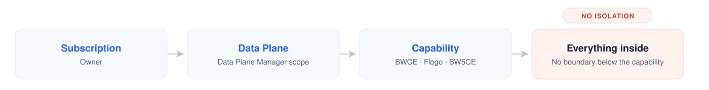
Teams sharing a data plane could see and change each other's work.
The only workaround was a separate data plane for every team, so the count grew with each new team.
Each data plane carries its own provisioning, monitoring and admin burden.
Extend permissions below the data plane so teams can safely share one, and bring on prem products into the same model, without broad roles or fiddly setup.
Constraints that shaped everything
The whole idea, in one picture
Control Plane owns the platform tasks: users, groups, teams, permissions, identity. Beneath it, two worlds carry the resource tasks. RBAC is simply their sum.
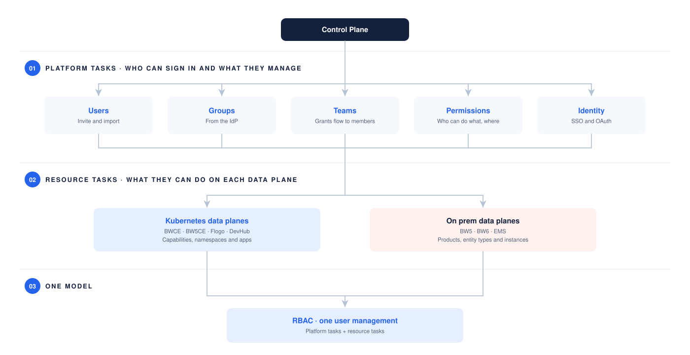
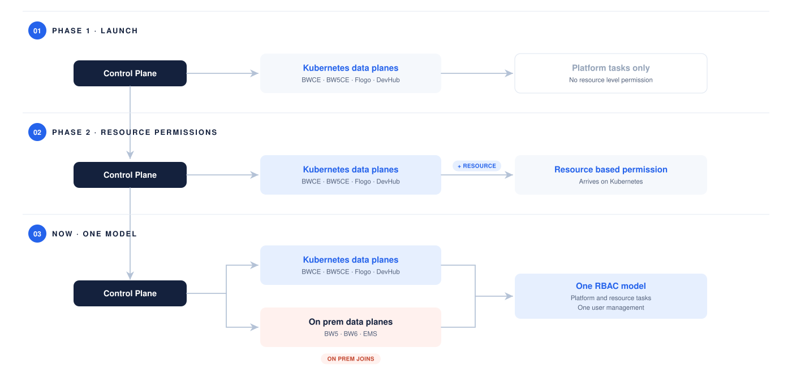
Research without direct users
The new model didn't exist yet, so there were no users to interview and no analytics. We studied the system itself, in three steps.
| Step | What we did | What it showed | Proof |
|---|---|---|---|
| 1 Legacy study | Used BW5, BW6 and Control Plane v1 hands on, with their docs | Each generation failed the opposite way: too flexible to read, then too coarse to isolate teams | Fig 03, Fig 04 |
| 2 Permission catalogue | Listed every controllable action, from registering a data plane to setting up SSO | Authority was already two tiered: permissions over people, and permissions over infrastructure | Four findings |
| 3 QA grid | Tested every v1 role against every other, cell by cell | Eight roles were doing the work of four | The grid below |
Step 1 · The legacy study
Two generations, two opposite failures. BW5 could express anything and nobody could read it; v1 was readable but stopped at the data plane.
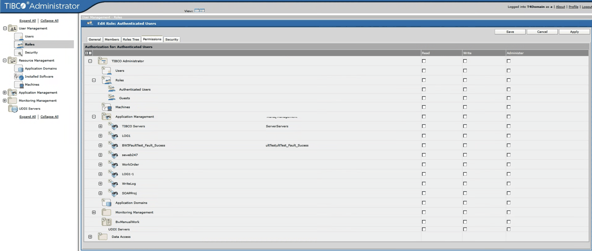
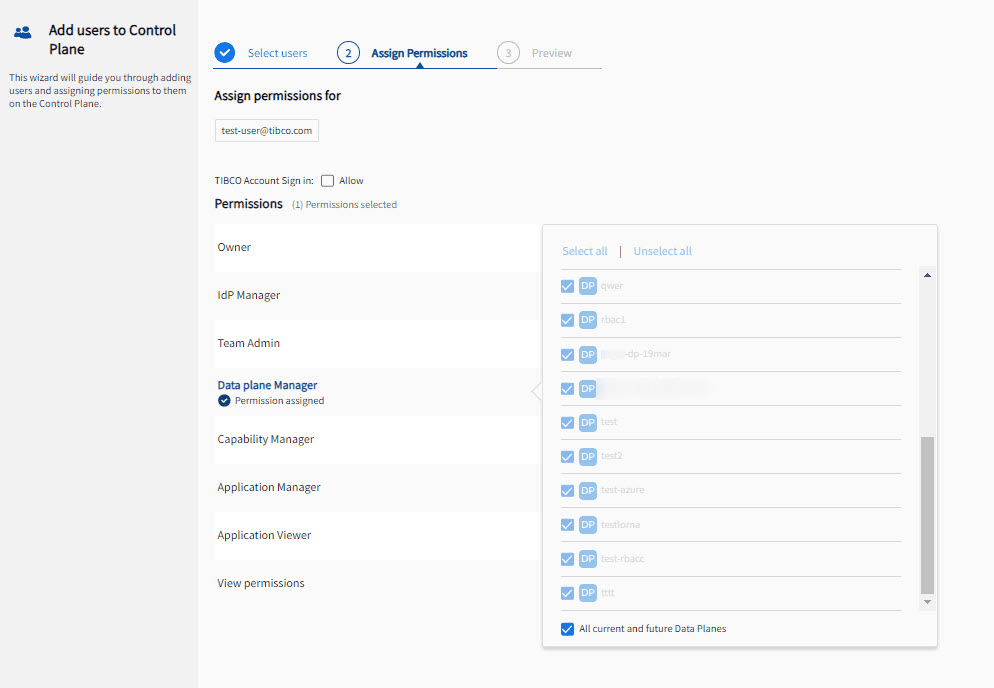
The legacy study artifacts5 itemsBW5 and BW6 details, BW6 screens, v1 comparison, Kubernetes mapping, role inventory
We started with where we were: BW5 Administrator, the BW6 Admin UI and Control Plane v1, through their docs and live environments.
Classic BusinessWorks ran per domain, each its own security realm with its own users, roles and access lists.
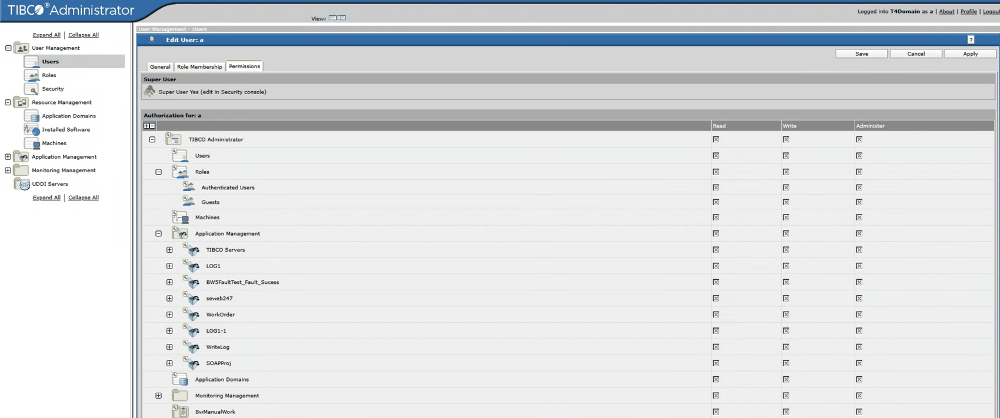
Unlimited flexibility makes a system nobody can read. Answering "who can touch app X?" meant opening dialogs one by one.
BW6 added three fixed roles and an entity versus instance split, an idea the redesign keeps. Granting access was still complicated.
| Role | Permission | What it allows |
|---|---|---|
| BW User | Read | View entities within granted scope |
| BW Operator | Lifecycle | Start and stop AppSpaces, AppNodes and applications |
| BW Administrator | Full control | Create, delete, deploy, update and back up across the hierarchy |
To see instance d1, you also had to grant the plural entity, domains.
Granting a child gave read on its parent, but a parent never flowed down.
Stopping an AppSpace stopped AppNodes the user could not even see.
A user who created an AppSpace could not view it without a new grant.
BW6 Enterprise Administrator screens
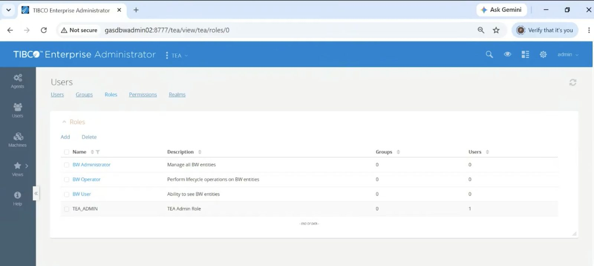
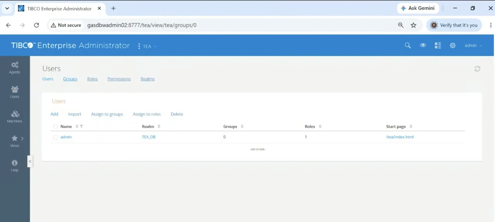
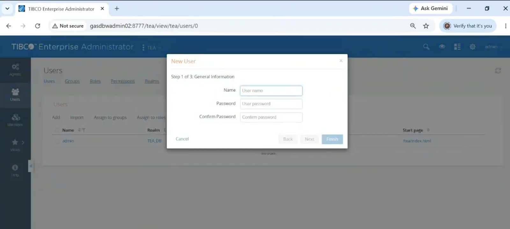
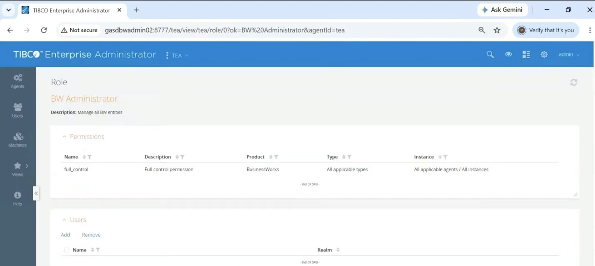
v1 swapped domains for a platform. The deepest change: precision moved from verbs to scopes.
| Dimension | Administrator 5.x | Control Plane v1 |
|---|---|---|
| Security boundary | Administration domain | Organization / subscription |
| Identity store | Local domain store or LDAP | TIBCO Accounts or corporate IdP (SAML SSO) |
| Authorization | Read / Write / Administer ACLs per resource | Fixed permissions scoped to data planes |
| Highest privilege | Super User, a bypass | Owner, a visible permission |
- One identity across every data plane, instead of accounts per domain
- A small set of named permissions everyone could talk about
- Effective access is the first thing you see
- Custom roles and per resource delegation
- Different rights on two sibling apps
- Anything below the data plane, including namespaces. This is the gap the rest of this case study is about.
Where v1's vocabulary came from: Kubernetes
| Kubernetes role | Grants | v1 counterpart |
|---|---|---|
| cluster admin | Unrestricted cluster wide access | Owner |
| admin | Full CRUD within a namespace | Data Plane Manager + Capability Manager |
| edit | Read/write, no RBAC changes | Application Manager |
| view | Read only | Application Viewer, Permission Viewer |
The irony: v1 borrowed Kubernetes roles, which are namespace scoped by design, then raised the boundary to the data plane. The level it dropped is exactly where team isolation lives.
Consolidated role inventory
A visibility staircase. Too wide, too coarse, several near duplicates.
A Super User above the model, and roles as saved bundles of checkboxes. Fine grained to a fault.
Named roles and an entity hierarchy, but still its own island.
A private store with permissions per destination, granted directly to users.
Step 2 · The permission catalogue
Every controllable action in one list. The headline: authority was already two tiered, people on one side and infrastructure on the other, and only the second can be scoped.
All four catalogue findings4 findingsTwo tiers, a hidden hierarchy, one role in both worlds, and the dependency trap
Authority was already two tiered. Control Plane permissions manage people; resource permissions manage infrastructure, and only the second can be scoped.
The exceptions hinted at a hierarchy. "Admin manages everyone except Owners and IdP Managers" is really a containment diagram written as a sentence.
One permission covers both worlds. Data Plane Manager is identical everywhere; below it Kubernetes uses roles and on prem uses a matrix.
Dependencies were a trap. Real people need combinations of permissions, so assigning them had to feel like one decision, not four.
Step 3 · Verifying v1 cell by cell
Every role against every other. A tick means the row role can see the column role's permissions; a grey dot means it can't. Nearly identical rows made the case for fewer roles before any meeting.
| v1 role sees → | Owner | Admin | Perm. Viewer | IdP Mgr | DP Mgr | Cap. Mgr | App Mgr | App Viewer | Became |
|---|---|---|---|---|---|---|---|---|---|
| Owner | ✓ | ✓ | ✓ | ✓ | ✓ | ✓ | ✓ | ✓ | Owner |
| Admin | ✗ | ✓ | ✓ | ✓ | ✓ | ✓ | ✓ | ✓ | Owner |
| Permission Viewer | ✗ | ✗ | ✓ | ✗ | ✓ | ✓ | ✓ | ✓ | Data Plane Manager |
| IdP Manager | ✗ | ✗ | ✓ | ✓ | ✓ | ✓ | ✓ | ✓ | Owner |
| Data Plane Manager | ✗ | ✗ | ✓ | ✗ | ✓ | ✓ | ✓ | ✓ | Data Plane Manager |
| Capability Manager | ✗ | ✗ | ✓ | ✗ | ✗ | ✓ | ✓ | ✓ | Capability Manager |
| Application Manager | ✗ | ✗ | ✓ | ✗ | ✗ | ✗ | ✓ | ✓ | Capability Manager |
| Application Viewer | ✗ | ✗ | ✓ | ✗ | ✗ | ✗ | ✗ | ✓ | Viewer |
Owner, Admin and IdP Manager acted alike at the top, so they became Owner. Permission Viewer and Data Plane Manager had identical rows, so they became Data Plane Manager. Capability and Application Manager overlapped, so they became Capability Manager. Eight roles were doing the work of four.
| Where | What happened | What it cost |
|---|---|---|
| Control Plane v1 | One data plane per team was the only way to keep teams apart. | As many data planes as teams, each with its own provisioning, monitoring and admin. |
| One customer | Many teams needed to share one data plane without seeing each other's work. | Not possible in v1. |
| BW5 Administrator | "Who can touch app X?" meant opening dialogs one by one. | Every access audit done by hand. |
| BW6 Admin UI | Seeing one instance needed its parent granted too; creators could not view their own AppSpace. | Extra grants for simple tasks. |
| v1 QA grid | Eight roles, several with near identical rows. | Twice the choices for the same work. |
Shaping the model
Three steps turned research into structure: a two-round card sort, a round of pushback, and a diagram of where authority lives.
Card sorting legacy tasks into the platform
We ran the sort in two rounds. Round 1, open sort: 5 internal participants made their own groups. Seven emerged, and on prem and BW6 items always stood apart.
Round 2, mapping: 21 legacy tasks from BW5, BW6 and EMS, each placed against the existing roles, with an open pile for misfits.
- Cards settled into seven clear categories.
- Permissions and Configuration were often grouped together.
- On prem and BW6 items always formed a group of their own.
- Users and Groups and Platform tasks came out as the core, highest priority areas.
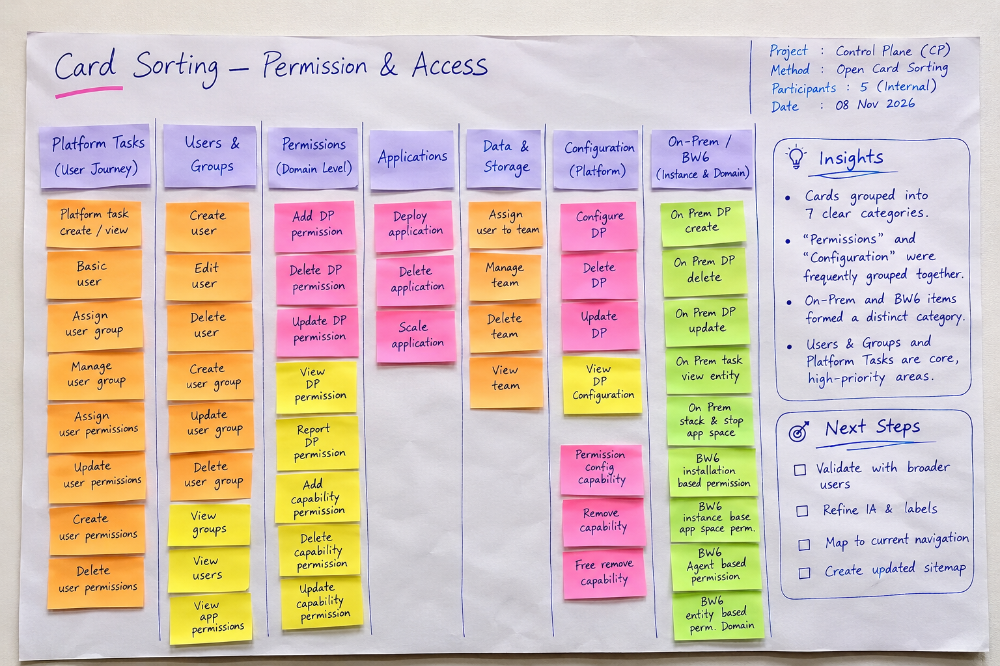
Where every legacy capability lands
21 legacy tasks, sorted against the eight platform roles.
Where all 21 cards landed21 cardsEvery legacy task by product and the role it mapped to
| Lands in | BW5 Administrator · 10 | BW6 Admin UI · 8 | EMS · 3 | Cards |
|---|---|---|---|---|
| Owner | Add and remove domain users | Assign roles to users | None | 2 |
| Application Manager | Deploy an application (EAR) Start and stop an application | Deploy an archive | None | 3 |
| Application Viewer | View the domain monitoring console | View deployed applications | None | 2 |
| Data Plane Manager | Register a machine | Register a bwagent | None | 2 |
| IdP Manager | Configure LDAP integration | None | None | 1 |
| Permission Viewer | Audit: who can touch app X? | None | None | 1 |
| Admin, Capability Manager | No card landed here directly. Admin later folded into Owner, and Capability Manager absorbed Application Manager. | 0 | ||
| Needs a decision | Read on app A, write on app B | Create an AppSpace Start and stop an AppNode Back up a domain View only domain d1 | Create a queue Browse a topic | 7 |
| Retired to the IdP | Reset a user's password Set password policy (XML) | None | Sync users into the EMS store | 3 |
Six of the seven open cards weren't missing roles. They were about scope: one domain, app A versus app B, a queue, a topic. So on prem access became a scoped grant beside the roles, not another role.
How the 7 open cards were resolved7 cardsEach became a place plus a role, or stayed platform operated
| Open card | Product | Resolved as: place + role |
|---|---|---|
| Read on app A, write on app B | BW5 | Instance + role |
| View only domain d1 | BW6 | Instance + Viewer |
| Start / stop an AppNode | BW6 | Instance + Capability Manager |
| Create an AppSpace | BW6 | Entity + Capability Manager |
| Create a queue | EMS | Entity + Capability Manager |
| Browse a topic | EMS | Instance + Viewer |
| Back up a domain | BW6 | Platform operated |
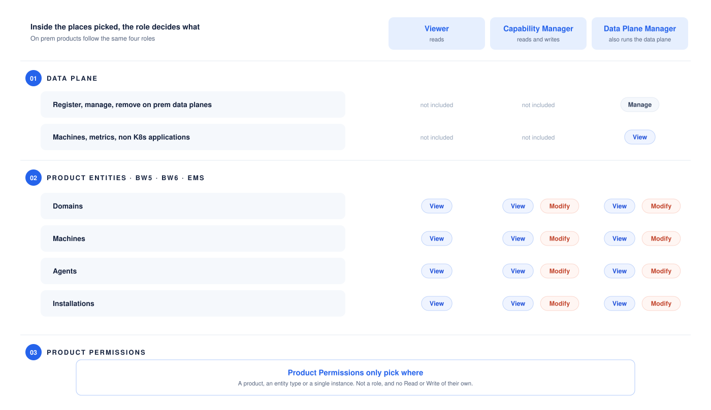
The pushback: "Why not just two roles?"
Our first proposal had six roles. Stakeholders called it too complex: why not just Admin and User? A fair challenge, so we tested both ends against how scoping actually works.
"Admin" bundles cluster deletion with app deploys. A team lead deploying their own app could also remove a cluster shared by three other teams.
Capability and Application Manager overlapped, and the QA grid agreed. Six roles to explain on day one, with no proof they were worth it.
Owner, Data Plane Manager, Capability Manager, Viewer. Scope does the fine grained work that extra roles would otherwise do.
Four came from reasoning with stakeholders, not user testing. It's first on our list to validate.
The containment model
Before any screens, we drew this. Access at any level shows everything below it, never above, never sideways.
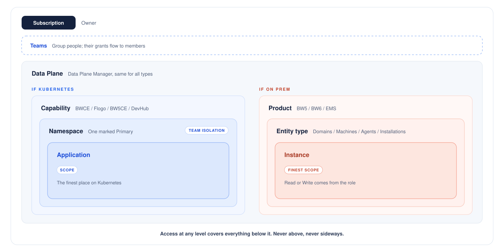
Midway, a new requirement arrived: several teams per subscription, invisible to each other. The model absorbed it with Teams, groups whose grants flow to their members, and no new role. "Never sideways" already kept teams apart.
The solution
Four roles, each seeing its level and everything below. Requests go up a level; grants come back down.
Owner
Runs people, permissions and identity. Never requests, because requests flow to them.
Data Plane Manager
The Owner's mirror, minus SSO, only on assigned data planes.
Capability Manager
Sets up capabilities and runs the apps on them. Asks the level above for more.
Viewer
Sees within scope, never changes anything.
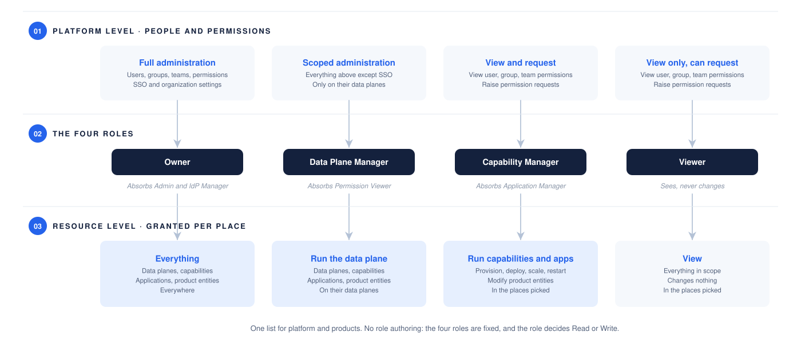
Two worlds, one way to give access
Many teams needed to share a data plane without seeing each other's work, while BW5, BW6 and EMS joined the platform. One screen serves both, so admins learn it once.
A data plane is an office building. Admins could only hand out a key to the whole building, so a team wanting privacy rented its own. We added keys for single floors (namespaces).
| Kubernetes | On prem · BW5, BW6, EMS | |
|---|---|---|
| The problem | Anyone managing apps on a shared data plane could see and change every team's apps. | BW6 nests like folders and names repeat, so "all AppSpaces" and "this AppSpace" blur. |
| Our fix | Add the team's own space, the namespace, to the access screen admins already know. | Show the same folder tree. The admin ticks what to include; the role decides view or change. |
| Granted at | Data plane, capability, namespace or application. It covers everything below, never anything beside. | Product, entity type or a named instance. |
| Example | A team gets Capability Manager on its namespace: it deploys there and can't see the team next door. | Domain D1 › AppSpace1 Included: the AppNodes inside are covered too. |
Standing rules: "All current and future" at any level writes a grant once and keeps it true as the estate grows.
Small rules that keep it simple8 rulesPlace before role, reasons on greyed out buttons, full path names, no "everything except" rules
- You pick the place first, then the role, so only roles that make sense there show up.
- It's one checklist screen, so you can tick many spaces at once.
- Greyed out buttons say why you can't do something, instead of disappearing.
- Whole teams come in through company groups, not one person at a time.
- We listed every kind of access request and agreed what each meant before drawing a screen.
- Names always show their full path, like "D1 › AppSpace1".
- You can see the folders above yours so you know where you are, but you can't open them.
- There are no "everything except X" rules, so checking someone's access is simple addition.
Inviting users
Two hosting models and four sign in methods, each with its own invite. Sign in varies a lot; giving permissions doesn't. So the invite screen adapts to the source, and every path ends in the same permission wizard.
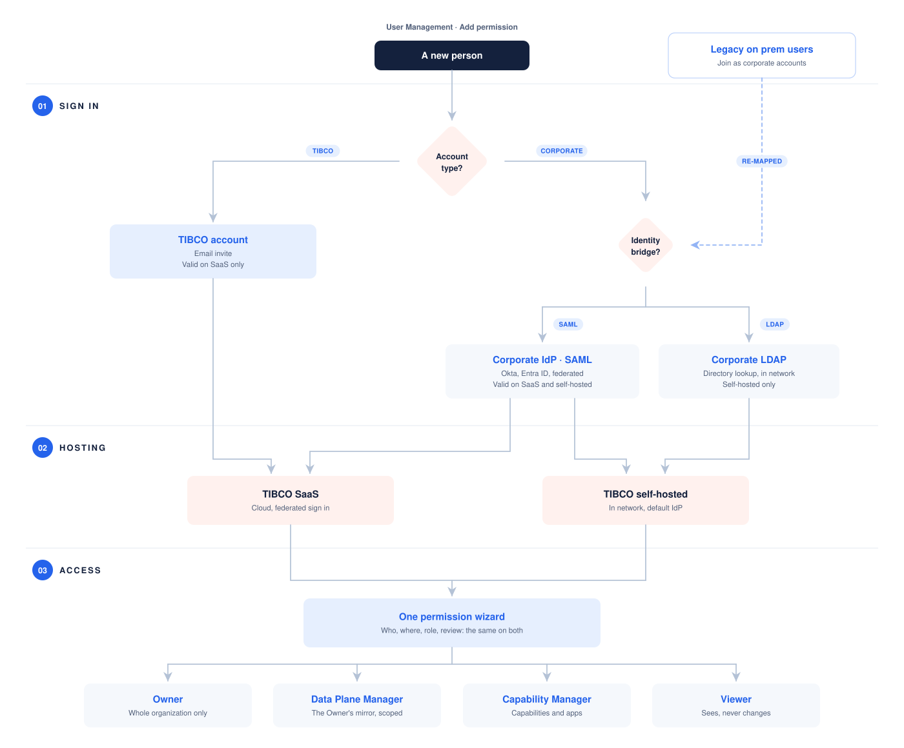
Information architecture: what changed
Control Plane v1 assigned access in three steps: Users, Permissions with scope, and Preview. The redesign uses four, one decision each, so Where can rule out roles before Role is asked. Starting from a person, a team or a data plane fills a step in, and Whole organization skips Role, so most paths still take three.
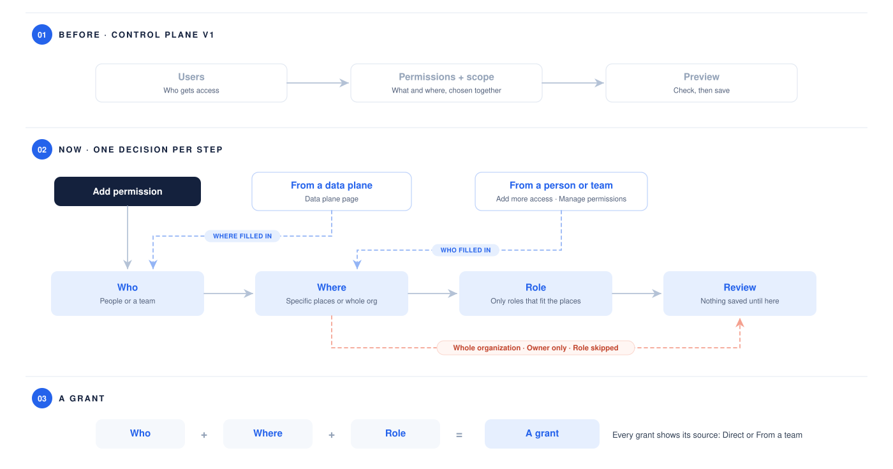
The navigation changed with it. Each role sees only the areas it can act on:
| Area | Owner | Data Plane Manager | Capability Manager | Viewer |
|---|---|---|---|---|
| User management: Users | Yes | Their data planes | No | No |
| User management: Teams | Yes | Their data planes | No | No |
| User management: IdP Groups, Configure SSO, OAuth | Yes | No | No | No |
| Requests to review | All | Their data planes | No | No |
| My access (account menu) | Yes | Yes | Yes | Yes |
| My requests | No, requests come to them | Yes, to an Owner | Yes, to their Data Plane Manager | Yes, to their Data Plane Manager |
Key flows and decisions
Four everyday admin jobs, what each screen does, and the decision behind it.
Choose where, then the role
Pick the place (search across every place), then the role. The screen reads the change back before saving.
One person, every grant
Each person's page lists every grant with its place, role and source.
You only see what's yours
Someone managing one data plane sees a product that holds only that data plane.
Data Plane Managers run their own patch
The Owner's pages, filtered to their data planes. No SSO or organization settings.
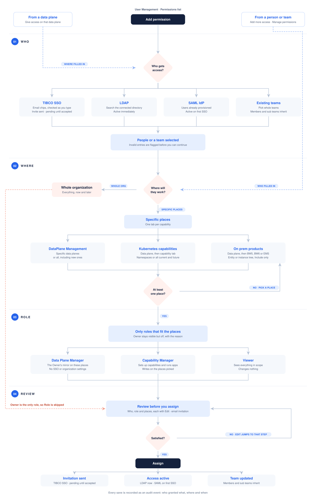
Screens & prototype
The model, built: sixteen screens across an admin's three jobs, then the whole thing as a working prototype.
Sixteen screens, three jobs
Each journey plays step by step. Pick a job, or click any step to jump to it. Click a screen to see it full size.
Every flow, clickable
Five ways into one working prototype. Links between screens work, so any flow leads into the others.
Giving access, end to end
The add permission wizard as an Owner uses it.
Shown at 75 percent. Open full screen
Checking and changing one person
The permissions list is where everything after the grant starts.
Shown at 75 percent. Open full screen
Teams and inherited access
Teams carry access for groups of people, labelled From that team on each person.
Shown at 75 percent. Open full screen
Four roles, four views
The same product as each role sees it, with a guided scenario for every role.
Shown at 75 percent. Open full screen
My access and asking for more
Every role has a page showing its own access and where it comes from.
Shown at 75 percent. Open full screen
What we tried and left behind
Ideas we built, then dropped, and what replaced them.
Data planes, namespaces and on prem products in one list hid what was granted.
Most admins grant by type, and every new namespace meant granting again.
An X reads as closing a pop up, not discarding work.
Cancel and Skip looked alike but did opposite things.
Blurred where navigation ends and the page begins.
It mixed where with what.
A hidden rule nobody could guess.
Other places could not offer it.
Admins retyped what the page already knew.
- Four roles, no custom roles. Each extra role makes the picker and audit harder to read.
- Role says what, scope says where. Every grant names a place.
- Every grant shows its source. Direct or From a team, so access is changed where it comes from.
- Destructive actions confirm. Removing all access offers Undo.
- IdP Groups, SSO and OAuth: unchanged; set up once by a few people.
- Custom roles: can follow if usage asks for them.
- Full audit view: requests log who granted what; the audit log is its own project.
Impact & next steps
The model hasn't launched, so there are no usage numbers, and we won't invent any. What has already changed:
Became a formal requirement
Namespace level access is now defined in a product requirements document, with this UX work as its design workstream.
Stakeholders agreed on four roles
The "why not just two roles?" pushback ended in a shared decision: four roles, with scope doing the fine grained work.
Audit trail added to scope
Stakeholder mapping surfaced the auditor's needs, and access change events became first class audit records.
Spot Award from Coforge
Recognised for the TIBCO project work.
What comes next
PlannedHere's how we plan to measure whether it worked.
- Data planes per account. The strongest signal: accounts should consolidate toward fewer, shared data planes.
- Support tickets tagged "access issue"
- Time to first successful grant
- Share of grants scoped below the data plane
Task based sessions with 5 platform or team admins on four everyday access tasks, timed in Control Plane v1 too as the baseline.
- Does the four role model reduce friction, or does a Manager role do too many jobs?
- Is scope first easy to learn when most cloud consoles go role first?
Reflection
The work was shared; these notes are my own.
Studying what shipped first. Every idea was tested against two known failures: the unreadable matrix and the coarseness that multiplied data planes.
Talk to a few platform admins before fixing the role count. I believe in four, but belief isn't evidence.
Drawing where authority lives before any screen. It answered most hard questions before design review.
Fewer roles × precise scopes.